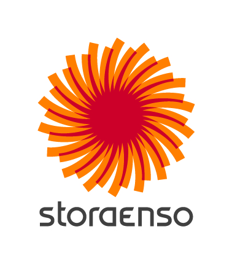
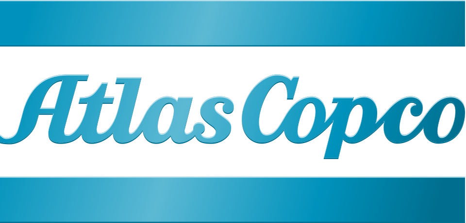
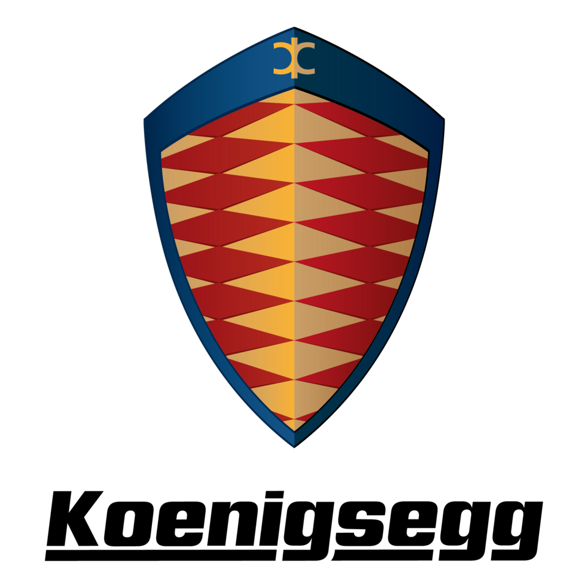
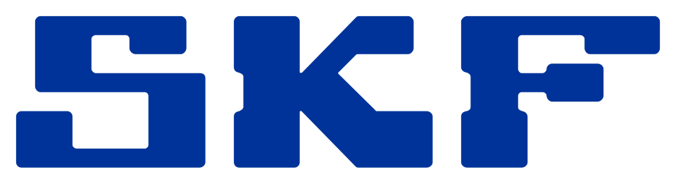

스웨덴 브랜드 43
스웨덴에서 시작한 브랜드 43개를 로고와 함께 모았습니다. 대표적인 스웨덴 브랜드로는 스포티파이(Spotify), 스칸디나비아 항공(Scandinavian Airlines), 에릭슨(Ericsson), 스카니아(Scania), 모장 스튜디오(Mojang Studios), 사브(SAAB) 등이 있습니다. 수록 기준은 검수된 브랜드 설명이나 공식 웹사이트가 일치하는 위키데이터 개체에서 기원 국가가 확인된 경우로 한정했습니다.
다른 국가 보기
국가별 전체 →산업별로는 모빌리티 10개, 기술·전자 7개, 미디어·엔터테인먼트 5개, 에너지·산업재 5개 순입니다. 설립연도가 확인된 브랜드는 42개이며 가장 오래된 곳은 1841년, 가장 최근은 2009년에 시작했습니다. 시기별로는 1900년 이전 6개, 1900~1949년 13개, 1950~1999년 17개, 2000년 이후 6개입니다. 수록 자료로는 로고 이미지 43개, 로고 변천 자료 3개, 연혁 타임라인 5개를 갖췄습니다. 이 가운데 39개는 공식 웹사이트가 일치하는 위키데이터 개체로 연결해 두었습니다.
산업별 스웨덴 브랜드
스웨덴 모빌리티 브랜드 10
스웨덴 브랜드 목록
 누디진Nudie Jeans스웨덴 · 2001년
누디진Nudie Jeans스웨덴 · 2001년누디진(Nudie Jeans)은 raw 데님과 무상 수선·재활용을 핵심으로 하는 스웨덴의 친환경 청바지 브랜드이다.
 볼보Volvo스웨덴 · 1927년
볼보Volvo스웨덴 · 1927년볼보(Volvo)는 1927년 스웨덴 예테보리에서 출발한 자동차 브랜드로, 승용차(볼보 자동차)와 상용차(볼보 그룹)로 분리돼 있다.
 스포티파이Spotify스웨덴 · 2006년
스포티파이Spotify스웨덴 · 2006년스포티파이는 2006년 스웨덴 스톡홀름에서 설립된 세계 최대 규모의 음악 스트리밍 서비스다.
빌테마Biltema스웨덴 · 1963년빌테마(Biltema)는 공구·자동차용품·레저용품을 저가로 판매하는 스웨덴 소매 체인이다.
사브(Saab)는 1937년 설립된 스웨덴의 항공우주·방산 기업이자, 1947년부터 생산됐다 2011년 종료된 자동차 브랜드를 함께 일컫는다.
 판두로 하비Panduro Hobby스웨덴 · 1955년
판두로 하비Panduro Hobby스웨덴 · 1955년판두로 하비(Panduro Hobby)는 취미·창작 재료를 취급하는 북유럽 공예용품 소매 기업이다.
 모장 스튜디오Mojang Studios스웨덴 · 2009년
모장 스튜디오Mojang Studios스웨덴 · 2009년모장 스튜디오(Mojang Studios)는 스웨덴 스톡홀름에 위치한 비디오 게임 개발사로, 《마인크래프트》를 개발한 것으로 가장 잘 알려져…
 텔레2Tele2스웨덴 · 1993년
텔레2Tele2스웨덴 · 1993년텔레2(Tele2)는 스웨덴 스톡홀름에 본사를 둔 통신 기업이다.
 볼보자동차Volvo Cars스웨덴 · 1927년
볼보자동차Volvo Cars스웨덴 · 1927년볼보자동차(Volvo Cars)는 스웨덴의 다국적 럭셔리 자동차 제조사이다.
 일렉트로룩스Electrolux스웨덴 · 1910년
일렉트로룩스Electrolux스웨덴 · 1910년일렉트로룩스(Electrolux)는 스웨덴 스톡홀름에 본사를 둔 다국적 가전제품 제조 기업이다.

스토라엔소Stora Enso스웨덴 · 1998년스토라엔소(Stora Enso)는 핀란드와 스웨덴의 임업 기업이다.
 폴스타Polestar스웨덴 · 1996년
폴스타Polestar스웨덴 · 1996년폴스타(Polestar)는 스웨덴 예테보리 인근 토르슬란다에 본사를 둔 전기차 제조사이다.

아트라스콥코Atlas Copco스웨덴 · 1873년아트라스콥코(Atlas Copco)는 스웨덴에 본사를 둔 다국적 산업 기업이다.
 간트GANT스웨덴 · 1949년
간트GANT스웨덴 · 1949년간트(GANT)는 1949년 Bernard Gantmacher가 설립한 스웨덴의 디자이너 패션 브랜드이다.
 아사아블로이Assa Abloy스웨덴 · 1994년
아사아블로이Assa Abloy스웨덴 · 1994년아사아블로이(Assa Abloy)는 스톡홀름에 본사를 둔 스웨덴 기업으로, 잠금장치·문·게이트와 출입 자동화, 출입 통제 및 신원 확인 제품과…
 파이러트베이The Pirate Bay스웨덴 · 2003년
파이러트베이The Pirate Bay스웨덴 · 2003년파이러트베이(The Pirate Bay)는 스웨덴에 있는 비트토렌트 파일 공유 웹사이트이다.
 핫셀블라드Hasselblad스웨덴 · 1841년
핫셀블라드Hasselblad스웨덴 · 1841년핫셀블라드(Hasselblad)는 스웨덴 예테보리에 본사를 둔 카메라 및 사진 장비 제조 업체이다.
 에릭슨Ericsson스웨덴 · 1876년
에릭슨Ericsson스웨덴 · 1876년에릭슨(Ericsson)은 1876년 설립된 스웨덴의 통신 장비 제조사이다.
 스웨드뱅크Swedbank스웨덴 · 1997년
스웨드뱅크Swedbank스웨덴 · 1997년스웨드뱅크(Swedbank)는 스웨덴에 기반을 둔 다국적 은행 그룹이다.
 앱솔루트 보드카Absolut Vodka스웨덴 · 1977년
앱솔루트 보드카Absolut Vodka스웨덴 · 1977년앱솔루트 보드카(Absolut Vodka)는 1977년 Vin & Sprit이 개발해 출시한 스웨덴의 보드카 브랜드이다.
 한델스방켄Handelsbanken스웨덴 · 1871년
한델스방켄Handelsbanken스웨덴 · 1871년한델스방켄(Handelsbanken)은 1871년 설립되어 스웨덴 스톡홀름에 본사를 둔 북유럽 은행이다.
 오토리브Autoliv스웨덴 · 1953년
오토리브Autoliv스웨덴 · 1953년오토리브(Autoliv)는 1953년 스웨덴 Vårgårda에서 설립되어 스톡홀름에 본사를 둔 자동차 안전 시스템 공급업체이다.

코닉세그Koenigsegg스웨덴 · 1994년코닉세그(Koenigsegg)는 스웨덴 엥엘홀름에 본사를 둔 스포츠카 제조사이다.
 피엘라벤Fjällräven스웨덴 · 1960년
피엘라벤Fjällräven스웨덴 · 1960년Fjällräven은 스웨덴의 아웃도어 브랜드로, 의류와 가방을 중심으로 한 야외 활동 장비를 만든다.
스칸디나비아 항공Scandinavian Airlines스웨덴 · 1946년스칸디나비아 항공(Scandinavian Airlines)은 노르웨이·스웨덴·덴마크 3국 연합으로 구성된 항공사이며, SAS 그룹을 모기업으로…
 스카니아Scania스웨덴 · 1911년
스카니아Scania스웨덴 · 1911년스카니아(Scania)는 스웨덴의 중공업 기업이다.
 볼보트럭Volvo Trucks스웨덴 · 1928년
볼보트럭Volvo Trucks스웨덴 · 1928년볼보트럭(Volvo Trucks)은 스웨덴 예테보리에 본사를 둔 상용차 제조사이다.
 볼보버스Volvo Buses스웨덴 · 1968년
볼보버스Volvo Buses스웨덴 · 1968년볼보버스(Volvo Buses)는 스웨덴의 상용차 제조사이다.
 이케아IKEA스웨덴 · 1943년
이케아IKEA스웨덴 · 1943년이케아(IKEA)는 스웨덴의 가구 제조 기업으로, 스칸디나비아 특유의 디자인과 저렴한 가격, 그리고 소비자가 직접 운반 및 조립하는 DIY…
H&M(Hennes & Mauritz)은 스웨덴에 본사를 둔 다국적 패스트패션 의류 기업이다.
 Sveriges Television스웨덴 · 1956년
Sveriges Television스웨덴 · 1956년SVT(Sveriges Television)는 스웨덴의 공영 텔레비전 방송국이다.
 Investor스웨덴 · 1916년
Investor스웨덴 · 1916년Investor는 스웨덴 스톡홀름에 본사를 둔 투자·지주회사이다.
 Getinge AB스웨덴 · 1904년
Getinge AB스웨덴 · 1904년Getinge AB는 스웨덴의 상장 의료기술 기업이다.
 Spendrups스웨덴 · 1897년
Spendrups스웨덴 · 1897년Spendrups는 스웨덴의 양조회사로, 스웨덴에서 가장 큰 양조장이다.

SKF스웨덴 · 1907년SKF는 1907년 스웨덴 예테보리에서 설립된 베어링·씰 제조 기업이다.
 SJ AB스웨덴 · 2001년
SJ AB스웨덴 · 2001년SJ AB는 스웨덴의 국유 철도 회사이다.
Boliden AB스웨덴 · 1931년Boliden AB는 스웨덴 스톡홀름에 본사를 둔 다국적 금속·광업·제련 기업이다.
Private Media Group스웨덴 · 1965년Private Media Group은 인쇄 출판물, DVD, 인터넷을 통해 성인 엔터테인먼트를 배급하는 스웨덴의 제작·배급 회사이다.
 Hexagon AB스웨덴 · 1975년
Hexagon AB스웨덴 · 1975년Hexagon AB는 스웨덴 스톡홀름에 본사를 둔 다국적 산업 기술 기업이다.
 United Rentals스웨덴 · 1997년
United Rentals스웨덴 · 1997년United Rentals는 건설·산업 현장과 공공기관, 개인 고객에게 일반·고소 작업·특수 장비를 빌려주고 관련 판매와 정비를 제공하는 미국…
 Dugges Ale och Porterbryggeri스웨덴 · 2005년
Dugges Ale och Porterbryggeri스웨덴 · 2005년Dugges Ale och Porterbryggeri는 스웨덴 예테보리 외곽의 Landvetter에 있는 양조장이다.
 Kopparbergs Brewery스웨덴 · 1882년
Kopparbergs Brewery스웨덴 · 1882년Kopparbergs Brewery는 스웨덴 Bergslagen에 기반을 둔 양조 및 사이더 회사이다.
BIS Records스웨덴 · 1973년BIS 레코드(BIS Records)는 1973년 로베르트 폰 바르가 스웨덴에서 설립한 클래식 음반 레이블이다.